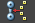
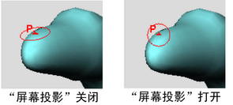
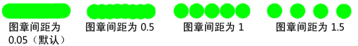
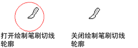
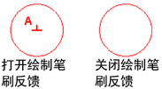
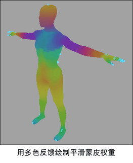
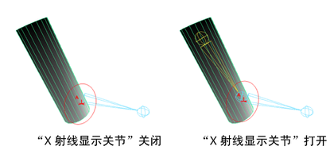

- 在“绑定”(Rigging)菜单集 (F3) 中，选择“蒙皮 > 绘制蒙皮权重工具”(Skin > Paint Skin Weights Tool) >
 。
。
- 在“动画”(Animation)菜单集 (F4) 中，选择“蒙皮 > 绘制蒙皮权重工具”(Skin > Paint Skin Weights Tool) > 。
使用“绘制蒙皮权重工具”(Paint Skin Weights Tool)，可以在当前平滑蒙皮上绘制权重强度值。有关使用“绘制蒙皮权重工具”(Paint Skin Weights Tool)的详细信息，请参见下列主题：
- 若要调整笔刷大小，请按 B 键并拖动。按 M 键并拖动可更改不透明度。
- “绘制蒙皮权重工具”(Paint Skin Weights Tool)仅使用有限数量的 Artisan 笔刷工具，且不包含诸如“光笔压力”(Stylus Pressure)或“反射”(Reflection)之类的选项。若要反射蒙皮权重，请使用“蒙皮 > 镜像蒙皮权重”(Skin > Mirror Skin Weights)（在“蒙皮”(Skin)菜单的“权重贴图”(Weight Maps)部分中）作为替代方法。
下列设置特定于“绘制蒙皮权重工具”(Paint Skin Weights Tool)。
蒙皮簇(Skin Clusters)
“蒙皮簇”(Skin Cluster)区域可用于在应用了多个蒙皮簇的几何体上控制单个蒙皮簇。如果在“蒙皮簇”(Skin Clusters)列表中选择蒙皮簇，“影响物”(Influences)部分也会使用与选定蒙皮簇相关的数据进行更新。
“影响物”(Influences)列表和“蒙皮簇”(Skin Cluster)列表相关联
- “蒙皮簇”(Skin Cluster)列表
- 如果向场景中添加了多个蒙皮簇，它将显示在此处。有关详细信息，请参见管理多个蒙皮簇。
注： 如果未选择任何蒙皮簇，则此列表将保留为空。
- 最近添加的蒙皮簇将显示在列表的顶部。
影响物(Influences)
- 排序(Sort)
-
这些选项可用于设置关节在“影响物”(Influences)列表中的显示方式。从下列选项中进行选择：
- 按字母顺序(Alphabetically)
-
按字母顺序对关节名称排序。
- 按层级(By Hierarchy)
-
按层级（父子层级）对关节名称排序，然后将其显示为可以展开和收拢的分支。列表的顶部会显示层次的根关节。
如果要绘制单个区域的蒙皮 - 需要从列表中选择关节，而同时又需要一个接一个地进行绘制，此时此选项非常有用。
- 平坦(Flat)
-
按层级对关节名称排序，但以平坦列表方式显示它们。在该列表中，父影响物仍然显示在子影响物上方，但是不能展开和收拢影响。
- 重置为默认值(Reset to Default)
-
将“影响物”(Influences)列表重置为默认大小。
- 展开影响物列表(Expand Influence List)
-
单击以展开“影响物”(Influences)列表，并显示更多行。
右键单击该按钮以打开“行增量选项”(Row Increments Options)窗口，然后设置每次单击要增加显示的行数。
- 收缩影响物列表(Shrink Influence List)
-
 单击以收缩“影响物”(Influences)列表，并显示更少行。
单击以收缩“影响物”(Influences)列表，并显示更少行。
右键单击该按钮以打开“行增量选项”(Row Increments Options)窗口，然后设置每次单击要减少显示的行数。
- “影响物”(Influences)列表
-
此区域显示绑定到选定网格的所有影响物的列表。例如，影响选定角色网格蒙皮权重的所有关节。
提示： 使用“影响物”(Influences)列表上方的大小控件展开面板并查看更多影响物。
在“影响物”(Influences)列表中，您可以使用以下控件。
- 过滤器(Filter)
-
输入文本以过滤在列表中显示的影响物。这样可以更轻松地查找和选择要处理的影响物，尤其是在具有复杂绑定时。
- “固定”(Pin)图标
-
固定影响物列表，以仅显示选定的影响物。
- 影响物“锁定”(Lock)图标
-
用于在绘制时锁定和解除锁定每个影响物以禁止和允许其接收权重。
- “影响物颜色”(Influence Color)按钮
-
打开“影响物颜色”(Influence Color)窗口，可以在此窗口中为选定的影响物指定新颜色。
- 复制权重(Copy weights)
-

单击以复制选定顶点的权重值。请参见复制平滑蒙皮权重。
- 粘贴权重(Paste weights)
-
单击以将复制的顶点权重值粘贴到其他选定顶点。
- 权重锤(Weight hammer)
-
单击以修复其权重导致网格上出现不希望的变形的选定顶点。Maya 为选定顶点指定与其相邻顶点相同的权重值，从而使变形更加平滑。请参见修复平滑权重。
- 移动权重(Move weights)
-

单击以将选定顶点的权重值从第一个选定的（源）影响物移动到其他选定的（目标）影响物。另请参见将权重移动到其他影响物。
单击“移动权重”按钮（或选择“蒙皮 > 编辑平滑蒙皮 > 将权重移动到影响物”(Skin > Edit Smooth Skin > Move Weights To Influences)）后，选定顶点的权重值将从选定的源影响物移除，并重新指定给选定的目标影响物。
注： 如果将“归一化权重”(Normalize Weights)模式设置为“交互式”(Interactive)，也可以将重新指定的权重归一化。 - 显示影响物(Show Influences)
-

单击以选择影响选定顶点的所有影响物。这可以帮助您解决网格区域中出现异常变形的疑难问题。
- 反选(Invert Selection)
-

单击以快速反转在列表中选择的影响物。结合“影响物”(Influences)列表的保持和不保持按钮一起使用时，此选项非常有用。
例如，仅选择要处理的影响物，然后单击“反选”(Invert Selection)以将选择更改为列表中的所有其他影响物。然后，单击以保持所有其他影响物。
- 显示选定项(Reveal Selected)
-
单击可自动滚动浏览“影响物”(Influences)列表，以显示选定的影响物。处理具有多个影响物的复杂角色时，此选项非常有用。
笔刷(Brush)
- 模式(Mode)
-
用于在绘制模式之间进行切换。
提示：使用热键 Ctrl + < 和 Ctrl + >，以在这些模式之间进行快速切换。
从下列选项中进行选择：
- 绘制(Paint)
-
启用此选项后，可以通过在顶点绘制值来设置权重。
- 选择(Select)
-
启用此选项后，可以从绘制蒙皮权重切换到选择蒙皮点和影响物。对于多个蒙皮权重任务（例如修复平滑权重和将权重移动到其他影响物），此模式非常重要。此外，在“选择”(Select)模式下，还可以选择多个顶点，然后在“值”(Value)字段中查看和修改其权重。
- 绘制选择(Paint Select)
-
启用此选项后，可以绘制选择顶点。
- 绘制选择(Paint Select)
- 通过三个附加选项可以设置绘制时是否向选择添加顶点或从选择中移除顶点：
- 添加(Add)
-
启用此选项后，绘制将向选择添加顶点。
- 移除(Remove)
-
启用此选项后，绘制将从选择中移除顶点。
- 切换(Toggle)
-
启用此选项后，绘制将切换顶点的选择。绘制时，将从选择中移除选定顶点并添加取消选择的顶点。
- 选择几何体(Select Geometry)
-
单击以快速选择整个网格。
根据工作流，当您要在网格上绘制权重（在“绘制”(Paint)模式下）以及完成其他类似于修复选定顶点的权重的操作（使用“选择”(Select)或“绘制选择”(Paint Select)模式和权重锤）并在它们之间来回切换时，使用此按钮可以节省时间。
- 绘制操作(Paint Operation)
-
选择下列选项之一。
- 替换(Replace)
-
笔刷笔划会将蒙皮权重替换为为笔刷设置的权重。
- 添加(Add)
-
笔刷笔划将增大附近关节的影响。
- 缩放(Scale)
-
笔刷笔划将减小远处关节的影响。
- 平滑(Smooth)
-
笔刷笔划将平滑关节的影响。
- 权重类型(Weight Type)
-
从以下类型的权重中选择以进行绘制。
- “归一化权重”(Normalize Weights)模式
-
从下列选项中进行选择：
- 禁用(Off)
-
选择此项以禁用平滑蒙皮权重归一化。
注： 请注意，通过该选项可以创建大于或小于 1 的权重，从而在执行角色时允许古怪或不正确的变形。 - 交互式(Interactive)
-
启用后，Maya 会在您添加或移除影响以及绘制蒙皮权重时归一化蒙皮权重值。（这是默认设置。）
工作时，Maya 会向其他影响物中添加或从其他影响物中移除权重，从而使所有影响物上的总权重合计为 1.0。可以在 skinCluster 节点 weightList 属性上查看用于变形的精确权重。
例如，如果将权重从 1.0 更改为 0.5，则 Maya 将在邻近影响之中分配剩余的 0.5。该模式复制了 Maya 先前版本中的归一化过程。
如果需要，使用权重分布(Weight Distribution)设置来确定 Maya 在规一化过程中创建新权重的方式。
- 加速(Post)
-
启用时，Maya 会在您变形网格时计算归一化的蒙皮权重值，防止任何古怪或不正确变形。网格上未存储任何规一化权重值，这使您可以继续绘制权重或调整交互式绑定操纵器，而不会让规一化过程更改先前的蒙皮权重操作。
选择该模式时，您可以在不干扰其他影响权重的情况下绘制或更改权重，并且在变形网格时仍然可以进行蒙皮的归一化。
注： 由于 Maya 在变形时动态计算归一化权重值，因此您无法查看 skinCluster 节点 weightList 属性中的归一化值。网格将使用归一化值进行变形，但 skinCluster 节点的实际权重值可能会增加到大于或小于 1。如果使用交互式蒙皮绑定，将为您自动选定该模式。（请参见平滑蒙皮的交互式绑定。） 因此，对于交互式绑定，在变形网格之前不会归一化权重。
有关蒙皮权重归一化的详细信息，请参见平滑蒙皮权重归一化和设置归一化模式和归一化权重。
- 不透明度(Opacity)
-
用于产生更平缓的变化，从而获得更精细的效果。例如，“值”(Value)为 1.0 时，如果将“不透明度”(Opacity)设置为 0.5，绘制的权重为 0.5。将“不透明度”(Opacity)设置为 0 时，笔刷笔划将没有任何效果。
- 值(Value)
-
设置笔刷笔划应用的权重值。
- 最小值/最大值(Min/Max Value)
-
设置可能的最小和最大绘制值。默认情况下，可以绘制介于 0 和 1 之间的值。设置最小值/最大值可以扩大或缩小权重值的范围。
负值对于减去权重非常有用。例如，如果将最小值设定为 -1，最大值设定为 -0.5，然后选择添加操作，则进行绘制时会从蒙皮权重中减去 0.5。正值用作倍增。
- 整体应用(Flood)
-
单击“整体应用”(Flood)可将笔刷设置应用于基础形状的顶点上的所有权重。结果取决于在执行整体应用时定义的笔刷设置。
请参见整体应用绘制。
可视化(Visualization)
本部分介绍了相关方法以查看权重影响网格的方式，方法是使用颜色显示特定区域上权重的强度或使用数字描述精确值。
- 几何体颜色(Geometry Color)
- 这些设置可用于以颜色渐变形式显示权重。
-
- 颜色渐变(Color Ramp)
-
启用此选项可在网格上使用颜色显示权重值。这样在绘制时可以更容易看到较小的值，并确定在不应有关节影响顶点的地方是否发生了影响。有关使用颜色渐变的详细信息，请参见使用渐变设置属性。
不同的颜色渐变类型
-
“颜色渐变”(Color Ramp)处于启用状态时，可以使用“权重颜色”(Weight Color)渐变和“选定颜色”(Selected Color)选项来自定义颜色渐变。也可以选择其中一个“颜色预设”(Color Preset)选项。
- 权重颜色(0 -1)(Weight Color (0 -1))
-
“颜色渐变”(Color Ramp)处于启用状态时，此区域可用于编辑颜色渐变。单击渐变任一侧的样例，设置颜色以表示值 0 和 1，或者选择渐变的部分并单击“选定颜色”(Selected Color)样例以重置该颜色。
- 选定颜色(Selected Color)
-
单击以打开“颜色选择器”(Color Chooser)窗口，并为颜色渐变的选定部分设置新颜色。仅在“颜色渐变”(Color Ramp)处于启用状态时可用。
- 颜色预设(Color Presets)
-
从预定义的三个颜色渐变选项中选择。
- 数值(Numeric)
-
同时使用颜色渐变和数值显示权重
- 这些设置可用于将权重值显示为数字。
注： 权重值 0.00 将处于隐藏状态。增加“小数位”(Decimal Places)设置的值可显示更精确的权重值
-
- 显示数字(Show Numbers)
- 启用此选项可将权重影响值显示为数字。
- 小数位(Decimal Places)
-
蒙皮权重显示 3 位小数
- 用于设置影响物权重显示的位数（例如，1.25、1.255 或 1.2555），以创建精确的权重效果。默认值为 2。
- 数字颜色(Number Color)
- 单击颜色样例可打开颜色选择器(Color Chooser)，或使用滑块为权重值选择颜色。
- 颜色渐变(Color Ramp)
-
蒙皮权重使用“颜色渐变”(Color Ramp)
- 激活此选项能够以颜色渐变形式显示权重数值。
- 权重颜色(Weight Color)
-
单击渐变任一侧的样例，设置颜色以表示值 0 和 1，或者选择渐变的部分并单击“选定颜色”(Selected Color)样例以重置该颜色。注： 数值可视化没有颜色渐变预设。
- 选定颜色(Selected Color)
-
单击以打开“颜色选择器”(Color Chooser)窗口，并为颜色渐变的选定部分设置新颜色。仅在“使用颜色渐变”(Use color ramp)处于启用状态时可用。
笔划设置(Stroke Settings)
- 半径(U)(Radius (U))
- 如果使用光笔，则设定笔刷的半径上限或可能的最大半径。无论使用多大的力按光笔，笔刷半径都不会超过该半径。如果未使用光笔，则该设置会定义笔刷的半径。如果使用滑块，最大值为 50；但如果使用热键（按 B 并拖动鼠标左键），则可以设定一个比 50 大的值。
- 半径(L)(Radius (L))
- 如果使用光笔，则设定在按该光笔时笔刷的半径下限或可能的最小半径。如果未使用光笔，则不会使用该设置。
- 屏幕投影(Screen Projection)
- 如果禁用该选项（默认设置），笔刷方向将沿曲面。启用此选项后，笔刷方向将沿视图平面，且图章会投影到选定的曲面。
-

使用“屏幕投影”(Screen Projection)可能会产生涂抹，在涂抹处曲面近似垂直于屏幕，且性能可能会降低。进行简单的翻滚，以使曲面与屏幕大致平行。
- 反射(Reflection)
-
“绘制蒙皮权重工具”(Paint Skin Weights Tool)禁用了“反射”(Reflection)。另一种反射蒙皮权重的方法是在“绑定”(Rigging)菜单集中设置“镜像蒙皮权重选项”(Mirror Skin Weights Options)（“蒙皮 > 镜像蒙皮权重”(Skin > Mirror Skin Weights) > ）。
- 图章间距(Stamp Spacing)
-
在曲面上单击笔刷可创建图章。笔刷笔划由多个重叠的图章构成。可以设定图章的重叠方式。如果将“图章间距”(Stamp Spacing)设置为 1，则每个图章的边将相互接触。如果将间距设定为大于 1，则图章间将存在间距。如果将间距设定为小于 1，则图章将重叠。
- 图章深度(Stamp Depth)
-
“图章深度”(Stamp Depth)值确定图章被投影的距离。例如，在使用“3D 绘制工具”(3D Paint Tool)进行绘制时，如果曲面上有褶皱，请减小“图章深度”(Stamp Depth)值，从而避免绘制曲面的其他区域。默认设置为 0.5。
光笔压力(Stylus Pressure)
使用该区域中的设置，可以定义使用光笔和对压力敏感的绘图板时光笔压力对笔划的影响。有关设定光笔压力的详细信息，请参见设置光笔压力。
- 光笔压力(Stylus Pressure)
-
启用该选项后，将激活压力对光笔的影响。
- 压力映射(Pressure Mapping)
-
选择希望受光笔压力影响的 Artisan 笔刷属性。如果添加到光笔的压力，将会增加选定属性的值。可以影响“不透明度”(Opacity)、“半径”(Radius)或“二者”(Both)。
“显示”(Display)区域
定义笔刷和曲面的显示方式。
- 绘制笔刷(Draw brush)
-
启用该选项后，在场景视图中将显示绘制工具。
- 绘制时绘制笔刷(Draw brush while painting)
-
启用该选项后，在曲面上绘制时将显示绘制工具的笔刷轮廓。禁用该选项后，在曲面上绘制时将只显示笔刷指针。默认情况下，“绘制时绘制笔刷”(Draw brush while painting)处于禁用状态。
如果绘制时发现交互速度较慢，请禁用该选项。这会大大提高显卡的性能，而无需叠加平面。
- 绘制笔刷切线轮廓(Draw brush tangent outline)
-
启用该选项后，在选定曲面上移动指针时将显示绘制工具的笔刷轮廓。如果该设置处于禁用状态，在选定曲面上移动指针时将看不到笔刷轮廓。
注： 可以将笔刷轮廓颜色更改为一种可以在正绘制的曲面中提供最佳对比度的颜色。详细信息请参见更改笔刷轮廓颜色。 - 显示笔刷反馈(Draw brush feedback)
-
显示有关为笔刷设定的待执行操作的笔刷轮廓的信息。
 - 显示线框(Show wireframe)
-
在选定曲面上显示线框。
- 颜色反馈(Color feedback)
-
仅适用于“绘制属性”(Paint Attributes)、“绘制簇权重”(Paint Cluster Weights)、“绘制抖动权重”(Paint Jiggle Weights)、“绘制蒙皮权重”(Paint Skin Weights)、“绘制柔体权重”(Paint Soft Body Weights)、“绘制集成员身份”(Paint Set Membership)、“绘制毛发属性”(Paint Fur Attributes)和绘制头发工具。
启用该选项后，曲面属性将显示为灰度值。这有助于在绘制时查看区域，且有助于识别值是什么（值越小越暗，值越大越亮）。若要显示颜色反馈，必须在 Maya 中启用平滑着色处理。
注： 如果为 1“次”(Degree) NURBS 曲面，则“颜色反馈”(Color Feedback)将无法正常工作。 - 多色反馈(Multi-color feedback)
-
启用该设置后，可以将绑定的几何体上所绘制蒙皮权重的分布视作多色反馈。显示在绑定几何体上的颜色与骨架的关节和骨骼有关，并且这些颜色指示每个关节影响的蒙皮区域。在“顶点”(Vertex)模式下或使用“绘制蒙皮权重工具”(Paint Skin Weights Tool)时，可以在场景视图中查看“多色反馈”(Multi-color Feedback)。
 - X 射线显示关节(X-Ray Joints)
-
面板菜单中也提供了该选项。有关详细信息，请参见面板菜单：着色。
启用该选项后，线框关节将显示在正绘制的网格的顶部。这样您就可以在着色模式下查看网格并轻松选择线框影响对象，而无需在线框和着色视图之间切换。
 - 最小颜色(Min color)
-
仅适用于“绘制属性”(Paint Attributes)、“绘制簇权重”(Paint Cluster Weights)、“绘制抖动权重”(Paint Jiggle Weights)、“绘制蒙皮权重”(Paint Skin Weights)、“绘制柔体权重”(Paint Soft Body Weights)、“绘制毛发属性”(Paint Fur Attributes)和绘制头发工具。设定显示最小颜色时的值。如果属性值彼此非常接近，使颜色反馈显示太不明显而难以检测，则这将非常有用。
- 最大颜色(Max color)
-
仅适用于“绘制属性”(Paint Attributes)、“绘制簇权重”(Paint Cluster Weights)、“绘制抖动权重”(Paint Jiggle Weights)、“绘制蒙皮权重”(Paint Skin Weights)、“绘制柔体权重”(Paint Soft Body Weights)、“绘制毛发属性”(Paint Fur Attributes)和绘制头发工具。设定显示最大颜色时的值。如果属性值彼此非常接近，使颜色反馈显示太不明显而难以检测，则这将非常有用。